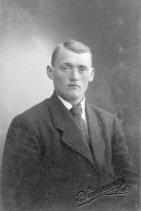
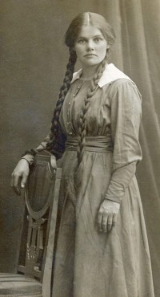

Ingeborg Ingebrigtsdatter Trones
K, #21726, f. 1825, d. 31 juli 1887
Foreldre
Biografi
Ingeborg Ingebrigtsdatter Trones ble født i 1825 på/i Trones, Namsskogan, Nord-Trøndelag. Hun giftet seg med
Johan Pedersen Sellæg. Hun døde den 31 juli 1887 på/i Reinbjør, Overhalla, Nord-Trøndelag.
Ingeborg Ingebrigtsdatter Trones had reference number 4564.
| Sist redigert |
18 oktober 2013 00:00:00 |
Rebekka Johansdatter Engstad
K, #21727, f. 19 desember 1847, d. 7 juli 1939
Foreldre
Biografi
Rebekka Johansdatter Engstad ble født den 19 desember 1847 på/i Overhalla, Nord-Trøndelag. Hun døde den 7 juli 1939 på/i Overhalla, Nord-Trøndelag.
Rebekka Johansdatter Engstad had reference number 4567.
| Sist redigert |
18 oktober 2013 00:00:00 |
| Slektskap | 4-menning 4 ganger forskjøvet til Håkon Wahl |
Gjertrud Margrete Johansdatter Renbjør
K, #21728, f. 18 oktober 1849, d. 24 mars 1919
Foreldre
Biografi
Gjertrud Margrete Johansdatter Renbjør ble født den 18 oktober 1849 på/i Trones, Namsskogan, Nord-Trøndelag. Hun giftet seg med
Johan Julius Olsen Opdal i 1882. Hun døde den 24 mars 1919 på/i Opdal, Overhalla, Nord-Trøndelag.
Gjertrud Margrete Johansdatter Renbjør was also known as Gjertrud Margrete Opdal. Hun had reference number 4568.
| Sist redigert |
18 oktober 2013 00:00:00 |
| Slektskap | 4-menning 4 ganger forskjøvet til Håkon Wahl |
Peter Johansen Renbjør
M, #21729, f. 1 mars 1854, d. 24 mars 1919
Foreldre
Biografi
Peter Johansen Renbjør ble født den 1 mars 1854 på/i Trones, Namsskogan, Nord-Trøndelag. Han giftet seg med
Maren Johanna Iversdatter. Han døde den 24 mars 1919.
Peter Johansen Renbjør had reference number 4569. Han bodde den 28 september 1889 på/i Reinbjør; 9, Reinbjør, Overhalla, Nord-Trøndelag. Han bodde i 1908 på/i Fossvik 3/37;38, Hammersøen, Vemundvik, Nord-Trøndelag. Han bodde i 1908 på/i Reinbjør; 9, Reinbjør, Overhalla, Nord-Trøndelag. Han bodde i 1917 på/i Fossvik 3/37;38, Hammersøen, Vemundvik, Nord-Trøndelag.
| Sist redigert |
8 mai 2021 00:00:00 |
| Slektskap | 4-menning 4 ganger forskjøvet til Håkon Wahl |
Georg Johansen Renbjør
M, #21730, f. 7 mars 1859, d. 28 desember 1860
Foreldre
Biografi
Georg Johansen Renbjør ble født den 7 mars 1859 på/i Trones, Namsskogan, Nord-Trøndelag. Han døde den 28 desember 1860 på/i Trones, Namsskogan, Nord-Trøndelag.
Georg Johansen Renbjør had reference number 4570.
| Sist redigert |
18 oktober 2013 00:00:00 |
| Slektskap | 4-menning 4 ganger forskjøvet til Håkon Wahl |
Georg Robert Johansen Renbjør
M, #21731, f. 28 oktober 1868, d. 7 januar 1886
Foreldre
Biografi
Georg Robert Johansen Renbjør ble født den 28 oktober 1868 på/i Reinbjør, Overhalla, Nord-Trøndelag. Han døde den 7 januar 1886.
Georg Robert Johansen Renbjør had reference number 4571.
| Sist redigert |
18 oktober 2013 00:00:00 |
| Slektskap | 4-menning 4 ganger forskjøvet til Håkon Wahl |
Johanna Christiansdatter Engstad
K, #21732, f. 14 april 1823, d. 1877
Foreldre
Biografi
Johanna Christiansdatter Engstad ble født den 14 april 1823. Hun giftet seg med
Simon Jørgensen Rodemsness. Hun døde i 1877 på/i Overhalla, Nord-Trøndelag.
Johanna Christiansdatter Engstad was also known as Johanna Rodemsness. Hun had reference number 4572.
| Sist redigert |
20 desember 2010 00:00:00 |
Maren Johanna Iversdatter
K, #21733, f. 8 januar 1863, d. 9 mai 1934
Foreldre
Biografi
Maren Johanna Iversdatter ble født den 8 januar 1863 på/i Foldereid, Nærøy, Nord-Trøndelag. Hun giftet seg med
Peter Johansen Renbjør. Hun døde den 9 mai 1934 på/i Fossvik, Namsos, Nord-Trøndelag. Hun ble gravlagt den 18 mai 1934 på/i Vemundvik kirkegård, Namsos, Nord-Trøndelag.
Maren Johanna Iversdatter was also known as Maren Johanna Grytbogen. Hun had reference number 4580.
| Sist redigert |
18 oktober 2013 00:00:00 |
Johan Renbjør
M, #21734, f. 7 november 1890, d. 16 oktober 1967
Foreldre

Johan Renbjør
Biografi
Johan Renbjør ble født den 7 november 1890 på/i Reinbjør, Overhalla, Nord-Trøndelag. Han giftet seg med
Anna Aurora Magnusdatter Foss. Han døde den 16 oktober 1967 på/i Namsos, Nord-Trøndelag. Han ble gravlagt den 20 oktober 1967 på/i Vemundvik kirkegård, Namsos, Nord-Trøndelag.
Johan Renbjør had reference number 4581. Han eide i 1917 Fossvika 3/37-39, Vemundvik, Namsos, Nord-Trøndelag. Han bodde i 1963 på/i Fossvik 3/37;38, Vemundvik, Namsos, Nord-Trøndelag.
| Sist redigert |
1 oktober 2021 00:00:00 |
| Slektskap | 5-menning 3 ganger forskjøvet til Håkon Wahl |
Ingeborg Pedersdatter Renbjør
K, #21735, f. 12 desember 1891, d. 7 september 1969
Foreldre
Biografi
Ingeborg Pedersdatter Renbjør ble født den 12 desember 1891 på/i Reinbjør, Overhalla, Nord-Trøndelag. Hun giftet seg med
Johan Kristian Bruun den 23 september 1919. Hun døde den 7 september 1969 på/i Namsos, Nord-Trøndelag. Hun ble gravlagt den 13 september 1969 på/i Vemundvik kirkegård, Namsos, Nord-Trøndelag.
Ingeborg Pedersdatter Renbjør was also known as Ingeborg Bruun. Hun had reference number 4582.
| Sist redigert |
16 august 2024 23:35:02 |
| Slektskap | 5-menning 3 ganger forskjøvet til Håkon Wahl |
Ivar Renbjør
M, #21736, f. 7 november 1892, d. 7 februar 1969
Foreldre
Biografi
Ivar Renbjør ble født den 7 november 1892 på/i Reinbjør, Overhalla, Nord-Trøndelag. Han giftet seg med
Gudrun Rebekka Bruun i 1931. Han døde den 7 februar 1969 på/i Overhalla, Nord-Trøndelag.
Ivar Renbjør had reference number 4583. Han bodde i 1926 på/i Kvatningen m/Askilaunet 1/4, Kvatningen, Overhalla, Nord-Trøndelag. Han kjøpte i 1931 Kvatningen 1/4, Kvatningen, Overhalla, Nord-Trøndelag. Han bodde i 1956 på/i Kvatningen m/Askilaunet 1/4, Kvatningen, Overhalla, Nord-Trøndelag.
| Sist redigert |
18 oktober 2013 00:00:00 |
| Slektskap | 5-menning 3 ganger forskjøvet til Håkon Wahl |
Hjørdis Kristine Renbjør
K, #21737, f. 30 juni 1895, d. 3 februar 1930
Foreldre

Hjørdis Kristine Renbjør
Biografi
Hjørdis Kristine Renbjør ble født den 30 juni 1895 på/i Reinbjør, Overhalla, Nord-Trøndelag. Hun døde den 3 februar 1930 på/i Namsos, Nord-Trøndelag. Hun ble gravlagt den 12 februar 1930 på/i Vemundvik kirkegård, Namsos, Nord-Trøndelag.
Hjørdis Kristine Renbjør had reference number 4584.
| Sist redigert |
25 mars 2024 14:47:44 |
| Slektskap | 5-menning 3 ganger forskjøvet til Håkon Wahl |
Per Øien Renbjør
M, #21738, f. 1 desember 1896, d. 22 oktober 1967
Foreldre
Biografi
Per Øien Renbjør ble født den 1 desember 1896 på/i Reinbjør, Overhalla, Nord-Trøndelag. Han giftet seg med
Sara Olava Foss i 1923. Han giftet seg med
Ingrid Oline Marie Olsen Elvemo den 31 desember 1936. Han døde den 22 oktober 1967 på/i Vemundvik, Namsos, Nord-Trøndelag. Han ble gravlagt den 27 oktober 1967 på/i Vemundvik kirkegård, Namsos, Nord-Trøndelag.
Per Øien Renbjør had reference number 4585. Han og
Gunnar Renbjør kjøpte i 1920 på/i Vetterhus 5/4, Vetterhus; Vemundvik, Namsos, Nord-Trøndelag. av Hanna Kristine Gryten. Per Øien Renbjør eide Vetterhus 5/4, Vetterhus; Vemundvik, Namsos, Nord-Trøndelag. Han bodde i 1965 på/i Vetterhus, Vemundvik, Namsos, Nord-Trøndelag.
| Sist redigert |
12 mai 2021 00:00:00 |
| Slektskap | 5-menning 3 ganger forskjøvet til Håkon Wahl |
Gunnar Renbjør
M, #21739, f. 13 juli 1898, d. 6 juli 1986
Foreldre
Biografi
Gunnar Renbjør ble født den 13 juli 1898 på/i Overhalla, Nord-Trøndelag. Han giftet seg med
Kaja Elisabeth Lervik. Han døde den 6 juli 1986 på/i Namsos, Nord-Trøndelag. Han ble gravlagt den 10 juli 1986 på/i Vemundvik kirkegård, Namsos, Nord-Trøndelag.
Gunnar Renbjør had reference number 4586. Han og
Per Øien Renbjør kjøpte i 1920 Vetterhus 5/4, Vetterhus; Vemundvik, Namsos, Nord-Trøndelag, av Hanna Kristine Gryten. Gunnar Renbjør bodde mellom 1925 og 1930 på/i USA.
| Sist redigert |
4 august 2022 17:06:48 |
| Slektskap | 5-menning 3 ganger forskjøvet til Håkon Wahl |
Roald Renbjør
M, #21740, f. 2 juli 1900, d. 20 august 1954
Foreldre
Biografi
Roald Renbjør ble født den 2 juli 1900 på/i Reinbjør, Overhalla, Nord-Trøndelag. Han døde den 20 august 1954 på/i Vemundvik, Namsos, Nord-Trøndelag. Han ble gravlagt den 28 august 1954 på/i Vemundvik kirkegård, Namsos, Nord-Trøndelag.
Roald Renbjør had reference number 4587. Han eide i 1940 Nybruhøgda; 3/28, Vemundvik, Namsos, Nord-Trøndelag.
| Sist redigert |
18 oktober 2013 00:00:00 |
| Slektskap | 5-menning 3 ganger forskjøvet til Håkon Wahl |
Anna Aurora Magnusdatter Foss
K, #21741, f. 4 oktober 1891, d. 19 november 1983
Foreldre
Biografi
Anna Aurora Magnusdatter Foss ble født den 4 oktober 1891 på/i Vemundvik, Namsos, Nord-Trøndelag. Hun giftet seg med
Johan Renbjør. Hun døde den 19 november 1983 på/i Namsos, Nord-Trøndelag. Hun ble gravlagt den 25 november 1983 på/i Vemundvik kirkegård, Namsos, Nord-Trøndelag.
Anna Aurora Magnusdatter Foss was also known as Anna Aurora Renbjør. Hun had reference number 4588.
| Sist redigert |
19 oktober 2013 00:00:00 |
Johan Kristian Bruun
M, #21742, f. 29 april 1888, d. 11 august 1964
Foreldre
Biografi
Johan Kristian Bruun ble født den 29 april 1888 på/i Foss, Vemundvik, Nord-Trøndelag. Han giftet seg med
Ingeborg Pedersdatter Renbjør den 23 september 1919. Han døde den 11 august 1964 på/i Foss, Vemundvik, Nord-Trøndelag. Han ble gravlagt den 15 august 1964 på/i Vemundvik kirkegård, Namsos, Nord-Trøndelag.
Johan Kristian Bruun had reference number 4591. Han bodde på/i Foss 3/28; 29, Vemundvik, Namsos, Nord-Trøndelag. Han bodde i 1947 på/i Foss 3/28; 29, Vemundvik, Namsos, Nord-Trøndelag.
| Sist redigert |
16 august 2024 23:39:15 |
Magnhild Petrine Bruun
K, #21743, f. 4 oktober 1920, d. 22 september 2001
Foreldre
Familie: Normann Sjursen (f. 11 oktober 1911, d. 14 juli 1978)
| Sønn | Bjørn Sjursen+ (f. 6 april 1942, d. 5 mai 2014) |
| Datter | Ingrid Marie Sjursen+ |
| Sønn | Rolf Sjursen+ |
Biografi
Magnhild Petrine Bruun ble født den 4 oktober 1920 på/i Vemundvik, Namsos, Nord-Trøndelag. Hun giftet seg med
Normann Sjursen. Hun døde den 22 september 2001 på/i Namsos, Nord-Trøndelag. Hun ble gravlagt den 28 september 2001 på/i Klinga kirkegård, Namsos, Nord-Trøndelag.
Magnhild Petrine Bruun was also known as Magnhild Petrine Sjursen. Hun had reference number 4594. Desember 1943 - Magnhild skulle åpne en karbidboks, og hadde et lys ved siden av for å se. Det utviklet seg gass fra boksen og det inntraff en eksplosjon. Magnhild fikk flammene i ansiktet og halsen og ble svært forbrent hvilket medførte et lengre sykehusopphold.
| Sist redigert |
17 desember 2017 00:00:00 |
| Slektskap | 6-menning 2 ganger forskjøvet til Håkon Wahl |
Asbjørn Johannes Bruun
M, #21744, f. 2 september 1922, d. 12 mars 1976
Foreldre
Familie: Solveig Johnsen (f. 2 april 1926, d. 19 juli 2016)
| Datter | Torild Bruun+ |
| Sønn | Kolbjørn Bruun+ (f. 13 juli 1949, d. 16 desember 2018) |
| Datter | Berit Bruun+ |
| Sønn | Torkild Bruun+ |
| Datter | Ingeborg Eldrid Bruun |
| Sønn | John Ove Bruun+ |
| Datter | Dordi Helen Bruun |
Biografi
Asbjørn Johannes Bruun ble født den 2 september 1922 på/i Vemundvik, Namsos, Nord-Trøndelag. Han giftet seg med
Solveig Johnsen den 30 august 1947. Han døde den 12 mars 1976.
Asbjørn Johannes Bruun had reference number 4595. Han eide i 1947 Foss 3/28; 29, Vemundvik, Namsos, Nord-Trøndelag. Han bodde i 1976 på/i Foss 3/28; 29, Vemundvik, Namsos, Nord-Trøndelag.
| Sist redigert |
17 desember 2010 00:00:00 |
| Slektskap | 6-menning 2 ganger forskjøvet til Håkon Wahl |
Steinar Bruun
M, #21745, f. 2 juli 1924, d. 26 september 2018
Foreldre
Familie: Bjørg Wold (f. 1 juni 1927, d. 2016)
| Sønn | Johan Petter Bruun |
| Datter | Monica Bruun+ |
| Sønn | Svein Olav Bruun |
| Datter | Bente Bruun+ |
| Datter | Lise Gørild Bruun |
| Sønn | Per Arne Bruun |
Biografi
Steinar Bruun ble født den 2 juli 1924 på/i Vemundvik, Namsos, Nord-Trøndelag. Han giftet seg med
Bjørg Wold den 27 desember 1948. Han døde den 26 september 2018 på/i Steinkjer, Nord-Trøndelag. Han ble gravlagt den 2 oktober 2018 på/i Steinkjer kapell, Steinkjer, Nord-Trøndelag.
Steinar Bruun had reference number 4596. Han ble konfirmert i 1939 på/i Vemundvik kirke, Namsos, Nord-Trøndelag. Han var militærutdannet i Forsvaret, Steinkjer. Han bodde i 1974 på/i Fossvik 3/37;38, Vemundvik, Namsos, Nord-Trøndelag.
| Sist redigert |
29 september 2022 17:04:12 |
| Slektskap | 6-menning 2 ganger forskjøvet til Håkon Wahl |
Jakob Bruun
M, #21746, f. 1 april 1926, d. 13 desember 2016
Foreldre
Familie: Jorid Ertsaas (f. 10 januar 1924, d. 15 desember 1990)
| Datter | Gudny Irene Bruun+ |
| Sønn | Arnt Olav Bruun+ |
| Datter | Randi Bruun |
| Datter | Inger Johanne Bruun+ |
| Sønn | Ivar Bruun |
Biografi
Jakob Bruun ble født den 1 april 1926 på/i Vemundvik, Namsos, Nord-Trøndelag. Han giftet seg med
Jorid Ertsaas den 31 desember 1946. Han døde den 13 desember 2016. Han ble gravlagt den 20 desember 2016 på/i Skage kirkegård, Overhalla, Nord-Trøndelag.
Jakob Bruun had reference number 4597. Han bodde i 1954 på/i Kvatningen m/Askilaunet 1/4, Kvatningen, Overhalla, Nord-Trøndelag.
| Sist redigert |
15 desember 2016 00:00:00 |
| Slektskap | 6-menning 2 ganger forskjøvet til Håkon Wahl |
Anders Bruun
M, #21748, f. 1 mai 1932, d. 15 desember 2010
Foreldre
Biografi
Anders Bruun ble født den 1 mai 1932 på/i Vemundvik, Namsos, Nord-Trøndelag. Han døde den 15 desember 2010 på/i Sykehuset Namsos, Namsos, Nord-Trøndelag. Han ble gravlagt den 21 desember 2010 på/i Namsos kirke, Namsos, Nord-Trøndelag.
Anders Bruun had reference number 4599. Han ble jordfestet Vemundvik kirkegård, Namsos, Nord-Trøndelag.
| Sist redigert |
17 desember 2010 00:00:00 |
| Slektskap | 6-menning 2 ganger forskjøvet til Håkon Wahl |
Normann Sjursen
M, #21749, f. 11 oktober 1911, d. 14 juli 1978
Foreldre
Biografi
Normann Sjursen ble født den 11 oktober 1911 på/i Kristiansund, Møre og Romsdal. Han giftet seg med
Magnhild Petrine Bruun. Han døde den 14 juli 1978 på/i Namsos, Nord-Trøndelag. Han ble gravlagt den 11 oktober 1978 på/i Klinga kirkegård, Namsos, Nord-Trøndelag.
Normann Sjursen had reference number 4600. Han eide Storviken 3/2, Sævik; Klinga, Namsos, Nord-Trøndelag, og gnr. 3, bnr. 2, Klinga, Namsos, Nord-Trøndelag.
| Sist redigert |
3 august 2022 13:47:27 |
Bjørn Sjursen
M, #21750, f. 6 april 1942, d. 5 mai 2014
Foreldre
Biografi
Bjørn Sjursen ble født den 6 april 1942. Han døde den 5 mai 2014 på/i Bjugn, Sør-Trøndelag.
Bjørn Sjursen had reference number 4603.
| Sist redigert |
20 mai 2014 00:00:00 |
| Slektskap | 7-menning 1 gang forskjøvet til Håkon Wahl |
{kind=link}
{kind=link}